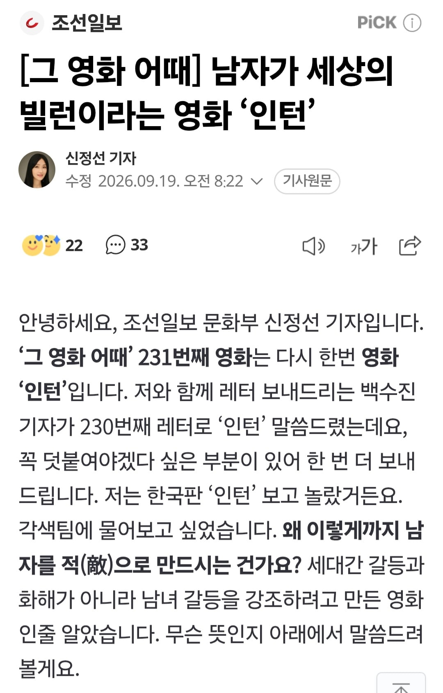
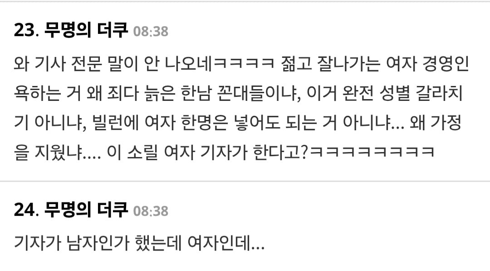
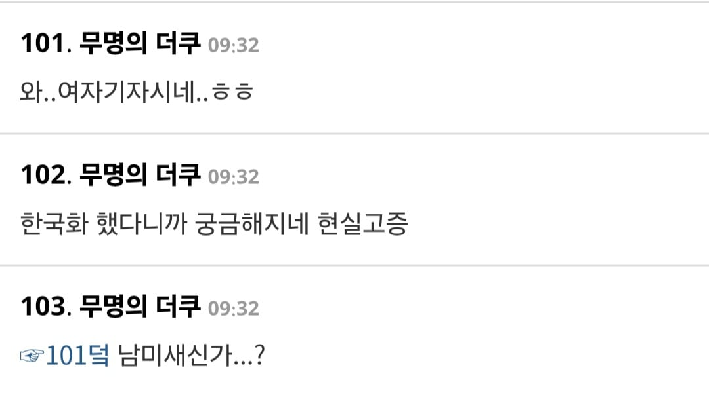

https://n.news.naver.com/article/023/0003999368?sid=103


소신발언 했다가 여초에서 남미새 몰이 당하면서 린치 당하는 중 ㄷㄷ
참고로 인턴 감독은 82년생 김지영 감독

https://n.news.naver.com/article/023/0003999368?sid=103


소신발언 했다가 여초에서 남미새 몰이 당하면서 린치 당하는 중 ㄷㄷ
참고로 인턴 감독은 82년생 김지영 감독
평 보니까 좆페미 영화라더만ㅋㅋㅋ
병신똥통에 있는 계집들이라 제정신이 아닌게 몇년짼지 감도안잡힘
여담이지만 82년생 김지영 영화는 별로 페미안같던데
오히려 고생만 뒤지게하는 남편과 정신병 걸린여자가 병식이 생기면서 치료를 받게되는 스토리가 주류였던거같음.
논란이 될 수 밖에 없는 이슈들을 다루긴 했지만 당시 개드립 여론과는 다른 느낌이긴 했어.
ㅇㅇ 나도 봤는데 페미 성향 있는지 모르겠던데
소설이랑 다름
그건 반대로 원작이 진짜 심각해서 그럼
원작은 사고사례 모음 가져다 놓고선 군대가면 무조건 쥭는다 주장하는 꼴이었지
공유가 워너비배우라서 그럼. 한남과다른 공유님 캐스팅해놓고 병신으로 만들순 없었거든. 소신도 없는거임
쌍칼형님 : 예쁜 여자는 예쁜 여자 욕 안해
하 보러갈까 했는대. 기사 전문 다 읽어보니. 그 명작을 쓰레기로 만들었나본대?
원작 인턴의 메인 갈등은 여사장의 배우자 문제였던것 같은데
사업적인 부분의 갈등도 있었나? 그냥 바쁘고 유능하다 정도로 기억하는데
빌런 해봤자 운전기사 음주운전이랑 남편 바람말곤 없던거 같음
세대간 융화가 주제인 힐링영화였는데 한국식 고추가루뿌리기가 들어갔나
레지던트 이블 영화나 보자
원작은 재밌게 봤는데 역시 k붙으면서 ㅍㅁ도 같이 붙었나보네 에휴 이렇게 작품하나 망치네
원작에도 묻어있음 김치맛이 아니라 한국에선 크게 못느낀것뿐
어떤 점에서? 여성ceo를 까내리는 아이친구들 엄마들 이 부분인가? 영화 3번봤는데도 잘 모르겠어서...
ㅇㅇ 전업주부와 남편, 다른 남자 캐릭터들
근데 주인공들 캐릭터도 전형적이라 양쪽에서 다 까임
애초에 감독이 페미니스트임. 원작 영화에 페미니즘적 코드가 없었다고 말하면 그게 이상하지
감독님은 여성주의 영화나 만들어~
뉴스 댓글 이미 좌표 찍어서 테라포밍 해놨네
김지영은 딱히 남혐 영화 느낌 아니던데 인턴은 어떻길래
인턴은 성별이 중요하게 작동되는 영화가 아닌데?
아무리 영화의 해석은 개인의 자유라지만
적당히 해야지 무슨 개소리를 하고있음
영화 평론가도 글더구만
원작에선 여주가 어설픈 면은 있더라도 평등하면서 일적으로는 프로페셔널하게 나온다
근데 한국판에서는 히스테릭하고 자기일에도 프로답지 않다 라고
영화 별로인가 너무 아쉽다 좀따 보러 갈까 고민 중이었는데
82키로 만든놈걸 볼 생각을 했다고?
Hoxy...
82년생 ㅈ도 관심없어서 감독이 누군지도 몰랐음 ㅋㅋㅋ
주연들 바이럴겁나 돌리는거 봐라.
영화가 재밌으면 그런거 안함
이게밎다...
아 빈깡통이 요란한거구나 바로 이해했어 ㅋㅋ 안봐야겠다
너 왜 돈을 버리려고 드냐?
콧수염단 또 몰려가겠네 ㅋㅋ 뭐 별개로 김지영 만든 감독의 영화는 내돈의 1도 소비하고싶은 맘이 안드네 ㅇㅇ.
존나 기대하던 영환데 저러면 볼필요가 없겠네. 가정과 일 사이에서 스스로를 저울질하면서 주체적으로 나아가는 내용은 싹 다 날려버렸구만
이건 근데 우리나라 뿐만 아니라 할리우드도 요즘 영화 다이럼. 남자는 악당이거나 찌질하고, 여자는 정의롭고 능력있게 나오는 경우가 많음 조연 주연 할 것 없이
좆틴씹블(캡틴마블) ㅋㅋㅋㅋㅋㅋ
빌런 악의를 담아 찌질하게 만들었더만
이쁘고 젊고 잘나가는 여성 CEO와 늙고 능력있는 스윗남페미 인턴 ㅋㅋ 은퇴할 나이대 남페미의 로망을 충족시켜주고 페미여성들에게는 걸캅스 같은 사이다를 날려주는 그런 영화인가보네
사실 원작도 그런 영화긴 한데
그래도 갈등을 여러가지로 잘 풀어냈었음.
워킹맘의 다른 전업주부와의 갈등, 아이와 시간을 못보내는 아쉬움, 전업주부남편과의 갈등, 내부직원과의 갈등 등등...
근데 기사 보면 여성간 갈등은 싹 빼버린듯
전업주부? 기성세대 남성이 대체
아이는 없고, 남편? 그딴 한남과는 이혼해!
남성은 최민식 빼고는 다 나쁜놈 ㅋㅋㅋㅋ
와 볼까했는데 저감독이라니까 때려죽여도보기싫네
인턴도 페미 묻었네
시사회 바이럴 돌릴때부터 쎄했어
개드립에서 영화 바이럴 돌리던 새끼있던데 ㅋㅋ
감독이 쓰레기영화만 만드는 스타일이네..ㅋㅋ

바이럴 ㅈ되게 돌리드만 결국 또 페미 영화인가보네